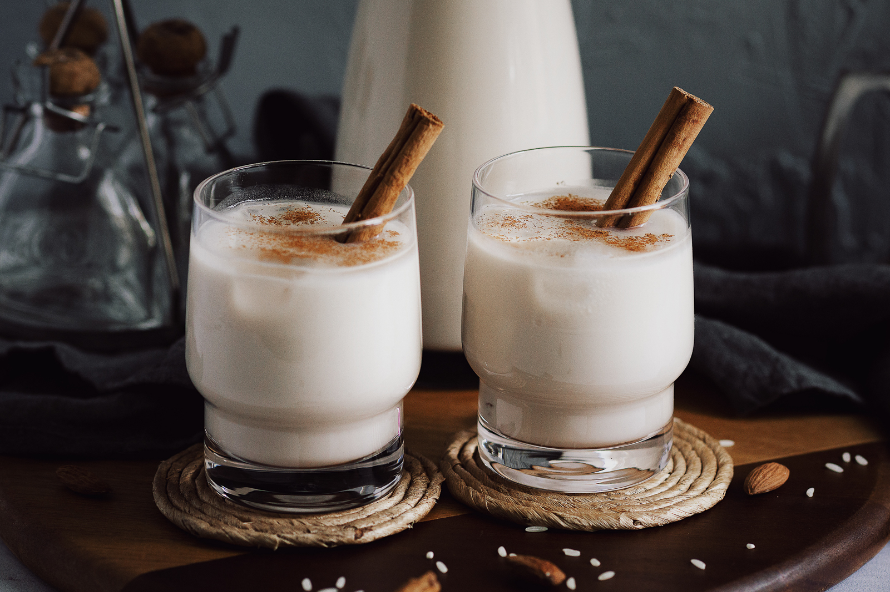

The Flavorist
.
Recipes
Health & Diet
Cuisines
About Us
Feedback
Horchata
"A refreshing and creamy Mexican drink made from rice, cinnamon, and milk."
Recipe submitted by Manasi

Ingredients
1 cup long-grain white rice
2 cinnamon sticks
4 cups water
1 cup whole milk (optional for creaminess)
1/2 cup granulated sugar (adjust to taste)
1 tsp vanilla extract
Ice cubes (for serving)
Ground cinnamon (for garnish)
Calories
200 kcal (per cup with milk)
150 kcal (per cup without milk)
50 kcal (1 tbsp sugar)
Directions
Rinse the rice thoroughly and combine it with cinnamon sticks and water in a bowl. Let it soak for at least 4 hours or overnight.
Transfer the soaked rice mixture to a blender and blend until smooth.
Strain the mixture using a fine-mesh sieve or cheesecloth into a pitcher, discarding the solids.
Stir in the milk (if using), sugar, and vanilla extract until fully combined.
Refrigerate until chilled. Serve over ice and sprinkle with ground cinnamon if desired.